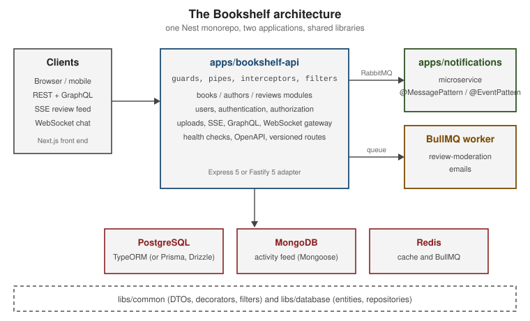

NestJS
|
This content was generated with the assistance of AI and should be verified against the official documentation before being relied on in production. |
This section is written against NestJS 12.1 (@nestjs/core 12.1.2, published 2026-09-30), the Nest CLI 12.0.8, Node.js
22 and 24 LTS (Nest 12 runs on Node.js 20.19+ and 22.12+), TypeScript 6 (6.0.x, which is what nest new installs; the
native TypeScript 7 compiler is current on npm but is not what the Nest templates use), Express 5 and Fastify 5, all
checked on 2026-10-02. Several first-party packages are still pre-1.0; each page says so where it matters.
What NestJS is
NestJS is a server-side framework for Node.js, written in TypeScript, that brings an Angular-inspired architecture to the back end: applications are organized into modules, behaviour is attached with decorators, and collaborating objects are wired together by a dependency injection container. Nest itself is deliberately platform-agnostic. It runs on top of an HTTP platform adapter (Express by default, Fastify as the alternative), and the same building blocks serve REST controllers, GraphQL resolvers, WebSocket gateways and microservice message handlers. The default platform is covered in the Express.js section.
It is not Next.js, which is a React framework for rendering pages; the two are often combined, and NestJS vs Next.js explains the difference and how they fit together.
This section is for developers who:
-
know TypeScript or JavaScript (see the TypeScript Reference) and want to build structured, testable server applications
-
come from Spring Boot, ASP.NET Core, Angular or FastAPI and want the same ideas (modules, DI, filters, guards) in the Node.js ecosystem
-
need the current idioms (the ESM project template, Vitest, Standard Schema validation, the post-restructure official documentation) rather than the patterns in older tutorials and books
What’s covered
Reading path
The pages build on each other. Read them in this order the first time:
-
Foundations: what Nest is, the CLI, TypeScript and project layout.
-
Building blocks: modules, controllers, providers, middleware, pipes, guards, interceptors, filters and the request lifecycle.
-
Fundamentals: dynamic modules, scopes, circular dependencies, execution context and lifecycle hooks.
-
Application: configuration, serialization, logging, events, queues and the HTTP client.
-
Data: TypeORM, the alternatives, Mongoose and caching.
-
HTTP: versioning, cookies, uploads, SSE, MVC and Fastify.
-
Security: authentication, authorization, CORS and CSRF, rate limiting and hardening.
-
OpenAPI, GraphQL and WebSockets.
-
Microservices and Reliability.
-
Testing and Production.
The cheat sheet at NestJS Cheat Sheet condenses the whole section onto one page for quick lookup.
Running example
Every example builds one small, original service, Bookshelf, the same domain used by the FastAPI and Kubernetes sections so that stacks can be compared:
-
books,authorsandreviewswith full CRUD over a versioned REST API and a code-first GraphQL API -
users with sign-in and authorization policies
-
cover-image uploads to file storage, a live "new review" feed over Server-Sent Events and a WebSocket chat per book
-
a
notificationsmicroservice reached over RabbitMQ (with Kafka, NATS and gRPC variants shown) -
a BullMQ queue for review-moderation emails
-
PostgreSQL through TypeORM (with Prisma and Drizzle variants), MongoDB for an activity feed and Redis for caching
The final layout is a Nest monorepo with apps/bookshelf-api, apps/notifications, libs/common and libs/database,
shown on Project Structure & Workspaces.

Related material on this site
The NestJS pages link to existing material instead of repeating it, and cover only what NestJS adds.
| Topic | Where it lives | How the NestJS section relates |
|---|---|---|
The TypeScript language, including legacy decorators and |
TypeScript Reference, including Decorators & Metadata and tsconfig & Compiler Options |
NestJS pages link here for classes, generics, modules, decorators, |
JavaScript, the event loop, ES modules versus CommonJS, npm and Jest |
JavaScript Development, including Async JavaScript, Modules and Jest |
Linked for the event loop, ESM/CJS, npm and Jest basics; not repeated. |
React server-side rendering; Angular dependency injection and RxJS |
React Server Rendering, Angular Dependency Injection and Angular RxJS & Async |
The Next.js comparison links the React page and the Next.js section; the DI and RxJS pages link Angular’s as "the same ideas on the front end". |
CORS |
The security headers, CORS and CSRF page links it for theory. |
|
GraphQL theory: schema, resolvers, subscriptions, federation, N+1 and security |
The NestJS GraphQL pages cover only |
|
OAuth 2.0, OIDC, JWT and token security |
The authentication pages link it for protocol theory. |
|
Node.js runtime: the event loop, modules, streams, |
Linked for the runtime NestJS runs on; the NestJS pages cover only what Nest adds. |
|
The same concepts in other stacks |
Linked from the introduction’s framework comparison. |
|
Kafka and RabbitMQ in depth |
The transports page covers only the Nest transporters. |
|
Architecture: DDD, sagas, outbox, CQRS, event sourcing, monolith versus microservices, API gateway and BFF |
Architecture, including CQRS, Transactional Outbox and Starting a New Project |
The microservices, CQRS and reliability pages link the patterns instead of re-explaining them. |
Dockerfiles, Compose, Testcontainers, CI/CD and Kubernetes probes, scaling and Helm |
Docker and Kubernetes |
Deployment and CI/CD show only the NestJS-specific Dockerfile, Compose file, probes and workflow. |
Cloud hosting |
AWS, Azure and Google Cloud |
Linked from the deployment page. |
Database engines, Prometheus and Grafana, migrations |
SQL, MongoDB, Redis, Prometheus and Schema Evolution |
The data, caching and observability pages cover only how to use each from NestJS. |
Bibliography
The reference material consulted while preparing these pages. Each entry links to its official website. The book is a consulted reference for the narrative and structure of some topics; it is not reproduced here. The official documentation linked below is authoritative, and where the two differ, the documentation of the version you run prevails.
Book
-
Linjanja, P. Scalable Application Development with NestJS: Leverage REST, GraphQL, microservices, testing, and deployment for seamless growth. Packt Publishing, 2025. Publisher page and companion code. ISBN 978-1-83546-860-9 (eBook) / 978-1-83546-395-6 (print).
Official NestJS documentation and resources
-
Overview (first steps, controllers, providers, modules, middleware, exception filters, pipes, guards, interceptors, custom decorators)
Platforms and libraries NestJS builds on or integrates with
Language and runtime
HTTP platforms
Core libraries
Data
Security
GraphQL and real-time
Messaging transports
Testing and building
Specifications
-
The GraphQL specification and the Apollo Federation specification linked above
-
RFC 6749 (OAuth 2.0), RFC 6750 (Bearer), RFC 7519 (JWT), RFC 9457 (problem details) and RFC 6265bis (cookies)
-
gRPC and Protocol Buffers
Third-party tools used by pages
-
Observability and logging: OpenTelemetry JS, prom-client, Prometheus, Grafana, Pino with nestjs-pino, Winston with nest-winston
-
Development tooling: Madge, nest-commander, nestjs-cls, CASL,
@codegenie/serverless-express, Consul and oxlint -
Containers: Docker and Testcontainers for Node
-
Next.js documentation, for the disambiguation page